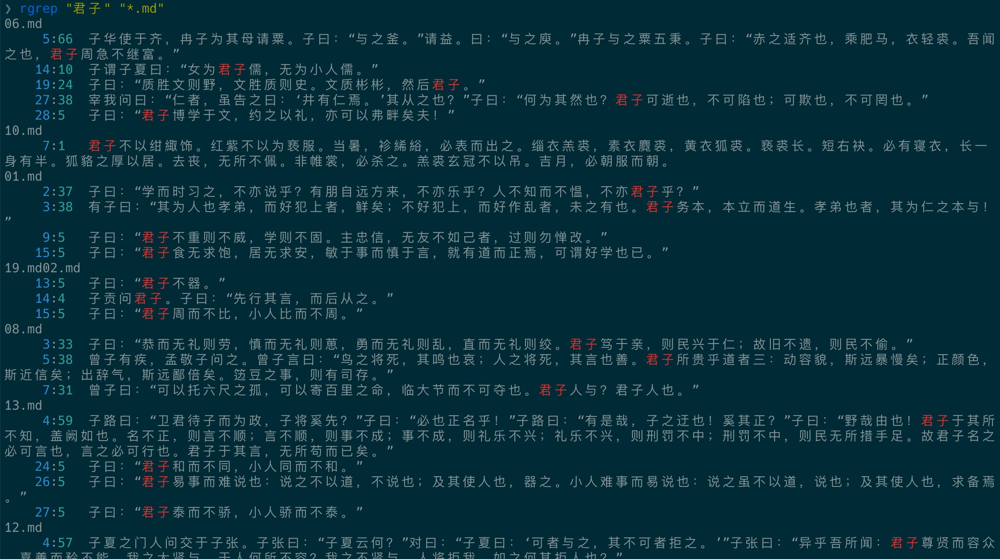

- 00 开篇词 让Rust成为你的下一门主力语言.md
- 01 内存：值放堆上还是放栈上，这是一个问题.md
- 02 串讲：编程开发中，那些你需要掌握的基本概念.md
- 03 初窥门径：从你的第一个Rust程序开始！.md
- 04 get hands dirty：来写个实用的CLI小工具.md
- 05 get hands dirty：做一个图片服务器有多难？.md
- 06 get hands dirty：SQL查询工具怎么一鱼多吃？.md
- 07 所有权：值的生杀大权到底在谁手上？.md
- 08 所有权：值的借用是如何工作的？.md
- 09 所有权：一个值可以有多个所有者么？.md
- 10 生命周期：你创建的值究竟能活多久？.md
- 11 内存管理：从创建到消亡，值都经历了什么？.md
- 12 类型系统：Rust的类型系统有什么特点？.md
- 13 类型系统：如何使用trait来定义接口？.md
- 14 类型系统：有哪些必须掌握的trait？.md
- 15 数据结构：这些浓眉大眼的结构竟然都是智能指针？.md
- 16 数据结构：Vec_T、&[T]、Box[T]_ ，你真的了解集合容器么？.md
- 17 数据结构：软件系统核心部件哈希表，内存如何布局？.md
- 18 错误处理：为什么Rust的错误处理与众不同？.md
- 19 闭包：FnOnce、FnMut和Fn，为什么有这么多类型？.md
- 20 4 Steps ：如何更好地阅读Rust源码？.md
- 21 阶段实操（1）：构建一个简单的KV server-基本流程.md
- 22 阶段实操（2）：构建一个简单的KV server-基本流程.md
- 23 类型系统：如何在实战中使用泛型编程？.md
- 24 类型系统：如何在实战中使用trait object？.md
- 25 类型系统：如何围绕trait来设计和架构系统？.md
- 26 阶段实操（3）：构建一个简单的KV server-高级trait技巧.md
- 27 生态系统：有哪些常有的Rust库可以为我所用？.md
- 28 网络开发（上）：如何使用Rust处理网络请求？.md
- 29 网络开发（下）：如何使用Rust处理网络请求？.md
- 30 Unsafe Rust：如何用C++的方式打开Rust？.md
- 31 FFI：Rust如何和你的语言架起沟通桥梁？.md
- 32 实操项目：使用PyO3开发Python3模块.md
- 33 并发处理（上）：从atomics到Channel，Rust都提供了什么工具？.md
- 34 并发处理（下）：从atomics到Channel，Rust都提供了什么工具？.md
- 35 实操项目：如何实现一个基本的MPSC channel？.md
- 36 阶段实操（4）：构建一个简单的KV server-网络处理.md
- 37 阶段实操（5）：构建一个简单的KV server-网络安全.md
- 38 异步处理：Future是什么？它和async_await是什么关系？.md
- 39 异步处理：async_await内部是怎么实现的？.md
- 40 异步处理：如何处理异步IO？.md
- 41 阶段实操（6）：构建一个简单的KV server-异步处理.md
- 42 阶段实操（7）：构建一个简单的KV server-如何做大的重构？.md
- 43 生产环境：真实世界下的一个Rust项目包含哪些要素？.md
- 44 数据处理：应用程序和数据如何打交道？.md
- 45 阶段实操（8）：构建一个简单的KV server-配置_测试_监控_CI_CD.md
- 46 软件架构：如何用Rust架构复杂系统？.md
- 加餐 Rust2021版次问世了！.md
- 加餐 代码即数据：为什么我们需要宏编程能力？.md
- 加餐 宏编程（上）：用最“笨”的方式撰写宏.md
- 加餐 宏编程（下）：用 syn_quote 优雅地构建宏.md
- 加餐 愚昧之巅：你的Rust学习常见问题汇总.md
- 加餐 期中测试：参考实现讲解.md
- 加餐 期中测试：来写一个简单的grep命令行.md
- 加餐 这个专栏你可以怎么学，以及Rust是否值得学？.md
- 大咖助场 开悟之坡（上）：Rust的现状、机遇与挑战.md
- 大咖助场 开悟之坡（下）：Rust的现状、机遇与挑战.md
- 特别策划 学习锦囊（一）：听听课代表们怎么说.md
- 特别策划 学习锦囊（三）：听听课代表们怎么说.md
- 特别策划 学习锦囊（二）：听听课代表们怎么说.md
- 用户故事 绝望之谷：改变从学习开始.md
- 用户故事 语言不仅是工具，还是思维方式.md
- 结束语 永续之原：Rust学习，如何持续精进？.md
因收到Google相关通知，网站将会择期关闭。相关通知内容
加餐 期中测试：来写一个简单的grep命令行
你好，我是陈天。
现在 Rust 基础篇已经学完了，相信你已经有足够的信心去应对一些简单的开发任务。今天我们就来个期中测试，实际考察一下你对 Rust 语言的理解以及对所学知识的应用情况。
我们要做的小工具是 rgrep，它是一个类似 grep 的工具。如果你是一个 *nix 用户，那大概率使用过 grep 或者 ag 这样的文本查找工具。
grep 命令用于查找文件里符合条件的字符串。如果发现某个文件的内容符合所指定的字符串，grep 命令会把含有字符串的那一行显示出；若不指定任何文件名称，或是所给予的文件名为 -，grep 命令会从标准输入设备读取数据。
我们的 rgrep 要稍微简单一些，它可以支持以下三种使用场景：
首先是最简单的，给定一个字符串以及一个文件，打印出文件中所有包含该字符串的行：
$ rgrep Hello a.txt
55: Hello world. This is an exmaple text
然后放宽限制，允许用户提供一个正则表达式，来查找文件中所有包含该字符串的行：
$ rgrep Hel[^\\s]+ a.txt
55: Hello world. This is an exmaple text
89: Help me! I need assistant!
如果这个也可以实现，那进一步放宽限制，允许用户提供一个正则表达式，来查找满足文件通配符的所有文件（你可以使用 globset 或者 glob 来处理通配符），比如：
$ rgrep Hel[^\\s]+ a*.txt
a.txt
55:1 Hello world. This is an exmaple text
89:1 Help me! I need assistant!
5:6 Use `Help` to get help.
abc.txt:
100:1 Hello Tyr!
其中，冒号前面的数字是行号，后面的数字是字符在这一行的位置。
给你一点小提示。
- 对于命令行的部分，你可以使用 clap3 或者 structopt，也可以就用 env.args()。
- 对于正则表达式的支持，可以使用 regex。
- 至于文件的读取，可以使用 std::fs 或者 tokio::fs。你可以顺序对所有满足通配符的文件进行处理，也可以用 rayon 或者 tokio 来并行处理。
- 对于输出的结果，最好能把匹配的文字用不同颜色展示。

如果你有余力，可以看看 grep 的文档，尝试实现更多的功能。
祝你好运！
加油，我们下节课作业讲解见。
© 2019 - 2023 Liangliang Lee. Powered by gin and hexo-theme-book.